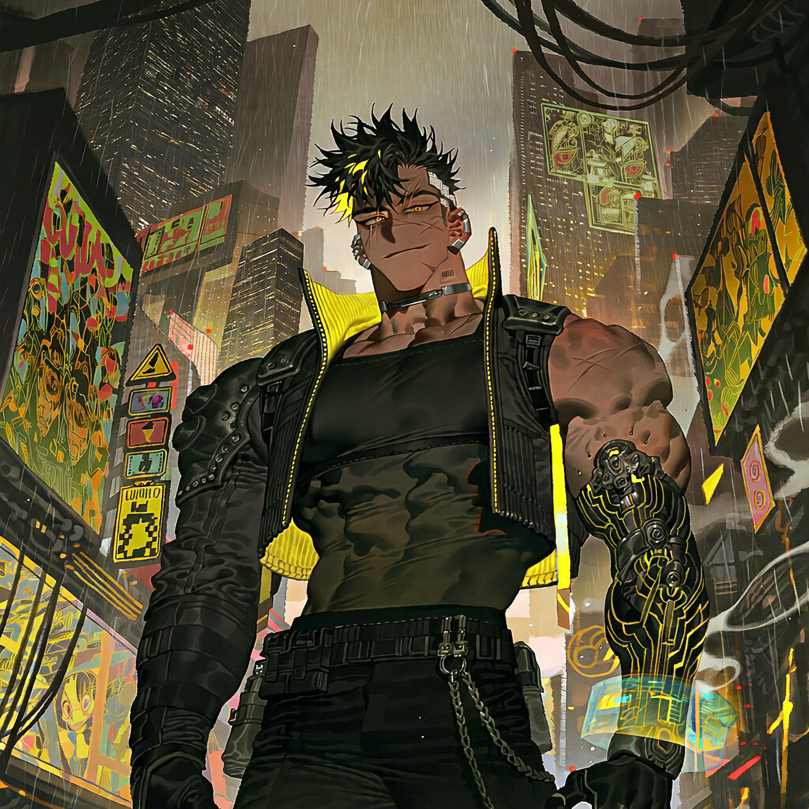

CHARACTER RECORD / 026STATUS: AVAILABLE

✦IMAGE
NOT FOUND
NOT FOUND
セヴェル
✦ WITH OUTFIT
服装込み
PROMPT DATATXT / 026
masterpiece, best quality, ultra detailed, intricate details, boy, adult male, cyberpunk mercenary,
1.6::extremely muscular male, massive muscular build, broad shoulders, thick arms, huge biceps, defined abs, powerful physique, muscular chest::,
1.5::short spiky black hair with neon yellow highlights, asymmetrical undercut, messy textured hair::, 1.4::glowing amber eyes, sharp eyes, cybernetic right eye, subtle facial scars::,
1.5::black futuristic tactical jacket with bright yellow neon piping, sleeveless cropped top, tight black combat pants, armored knee guards, heavy cyberpunk boots::, 1.5::black and yellow cybernetic arm, mechanical fingers, glowing yellow circuitry beneath the skin, reinforced shoulder armor, holographic wrist display::, 1.3::multiple silver ear piercings, black metal choker, utility belt, hanging chains, small barcode tattoo on the neck::,
1.5::rebellious expression, confident smirk, dangerous aura, fearless attitude, streetwise charisma::,